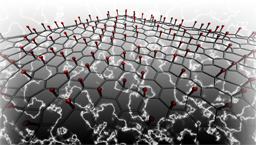
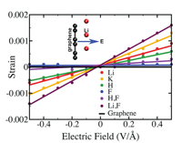

Among the biggest challenges in harnessing the power of nanotechnology is achieving dynamic control of mechanical, chemical and electronic properties of nanoscale devices. Many devices stand to benefit from such control including transistors, sensors, actuators, energy harvesters, motors, robots and other locomotive devices. In principle, dynamic control could be obtained by applying external electric fields to piezoelectric materials, but carbon-based nanomaterials like two-dimensional graphene, which was awarded the 2010 Nobel Prize in Physics, are not intrinsically piezoelectric.
|  |  |
| Surface doping of Graphene... | ...leads to piezoelectricty. |
By selectively adsorbing atoms on the surface, we have discovered that piezoelectricity can be engineered in nonpiezoelectric graphene. Ab initio density functional theory calculations have demonstrated that adsorbing different atoms on a single side of graphene results in varying piezoelectric magnitudes. These piezoelectric magnitudes are found to be comparable to those in 3D piezoelectric materials. This designer piezoelectric phenomenon is unique to the nanoscale and has potential to bring dynamical mechanical control to existing graphene-based devices and other technologies. One can also envision that this work could pave the way for the creation of revolutionary new devices based not just on graphene, but also other 2D and low-dimensional structures (e.g., carbon nanotubes, fullerenes, etc.) as well.
Publication:
Ong, M. T., Reed, E. J., Engineered Piezoelectricity in Graphene. ACS Nano, (2012).